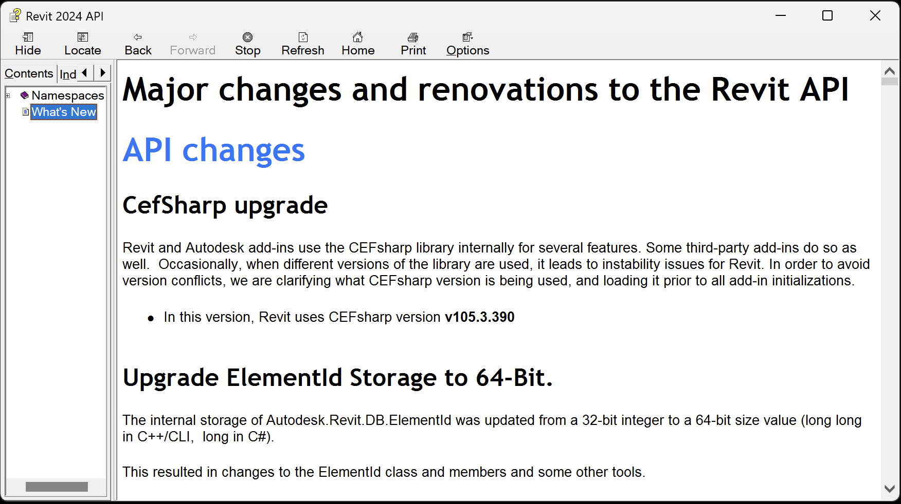

The information below is based on the contents of the Revit Platform API Changes and Additions.docx document included with
the Revit 2024 SDK, the software developers kit available from
the Revit Developer Centre.
It is also provided in the section on What's New in the Revit 2024 API help file RevitAPI.chm included with the SDK:

For convenient, easy, and effective web searching, this blog post provides a cleaned-up online HTML version of that information with numbering and table of contents added, as well as the following PDF printout of the original document included in the SDK with table of contents and page numbers added:
The What's New section and the Changes and Additions document provide important information, both for discovering and exploring the newly added API functionality and for later reference.
If you encounter any issues migrating your existing add-ins between different versions, this is one of the first places to look.
For detailed information on all other aspects of the Revit API, please refer to the rest of the API documentation and samples provided in the SDK.
The most important things to install and always keep at hand are:
The Revit API help file RevitAPI.chm
The Visual Studio solution containing all the SDK samples, Samples\SDKSamples.sln
You will regularly need both for research on how to solve specific Revit API programming tasks.
Revit and Autodesk add-ins use the CEFsharp library internally for several features. Some third-party add-ins do so as well. Occasionally, when different versions of the library are used, it leads to instability issues for Revit. In order to avoid version conflicts, we are clarifying what CEFsharp version is being used, and loading it prior to all add-in initializations.
In this version, Revit uses CEFsharp version v105.3.390
1.2. Upgrade ElementId Storage to 64-Bit
The internal storage of Autodesk.Revit.DB.ElementId was updated from a 32-bit integer to a 64-bit size value (long long in C++/CLI, long in C#).
This resulted in changes to the ElementId class and members and some other tools.
Autodesk.Revit.DB.ElementId.IntegerValue
→ Autodesk.Revit.DB.ElementId.Value
– IntegerValue will throw an exception if called on an ElementId whose value is high enough to need more than 32 bits to describe it. It is replaced by the new Value property that returns the full 64-bit value.
Autodesk.Revit.DB.ElementId()
→ Autodesk.Revit.DB.ElementId(System::Int64 id)
– Replaced by a constructor that takes the full 64-bit Value.
The new property:
Autodesk.Revit.DB.ElementId.Value
allows users to provide the value of the ElementId as System::Int64 The new constructor:
Autodesk.Revit.DB.ElementId(System.Int64 id)
allows users to create an ElementId handle with the given Int64 id.
1.2.1. Changes to pre-existing enumerated types
To support storage/conversion of Autodesk.Revit.DB.BuiltInCategory as an Autodesk.Revit.DB.ElementId, the underlying type size of the enum was upgraded from 32-bit to 64-bit.
This requires little to no code changes, however, code built against pre-2024 versions of the API may experience type cast and other type related exceptions when run against the 2024 versions of the API when working with the enum.
In order to run successfully, code needs to be rebuilt against the Revit 2024 API.
1.2.2. Binary breaking change to the Autodesk.Revit.DB.BuiltInParameter enumeration
To support storage/conversion of Autodesk.Revit.DB.BuiltInParameter as an Autodesk.Revit.DB.ElementId, the underlying type size of the enum was upgraded from 32-bit to 64-bit.
This requires little to no code changes, however, code built against pre-2024 versions of the API may experience type cast and other type related exceptions when run against the 2024 versions of the API when working with the enum.
In order to run successfully, code needs to be rebuilt against the Revit 2024 API.
1.2.3. Changes to other APIs
Support was added for System.Int64 types to Extensible Storage.
Updated Autodesk.Revit.DB.ExtensibleStorage.SchemaBuilder.AddSimpleField() now accepts System.Int64 as a valid type for the fieldType.
Updated Autodesk.Revit.DB.ExtensibleStorage.SchemaBuilder.AddMapField() now accepts System.Int64 as a valid type for the keyType and valueType.
1.2.4. Changes to decal properties
The decal asset properties named decalelementId and materialId are changed from type AssetPropertyInteger to AssetPropertyInt64.
The code that would find these properties and then use them as AssetPropertyInteger/ AssetPropertyType.Integer type should be changed to use them as AssetPropertyInt64 / AssetPropertyType.Longlong type. For example:
AssetPropertyInteger decalElementIdProp
= (asset.FindByName("decalelementId")
as AssetPropertyInteger);
if (decalElementIdProp.Type == AssetPropertyType.Integer)
should be changed to
AssetPropertyInt64 decalElementIdProp
= (asset.FindByName("decalelementId")
as AssetPropertyInt64);
if (decalElementIdProp.Type == AssetPropertyType.Longlong)
1.3. Replacement of TopographySurface with Toposolid
TopographySurface and SiteSubRegion elements have been superseded as of Revit 2024 by a new element Autodesk.Revit.DB.Architecture.Toposolid and related classes. It is recommended that all newly created elements and modifications operate from the new Toposolid class. The TopographySurface element remains in the API for backwards compatibility and upgrade.
As a result of this change, the following methods are marked as deprecated:
TopographySurface.Create()
→ Toposolid.Create() (from points or curve profiles)
– Toposolid.CreateFromTopographyS urface() is also available to convert an older element to its more modern replacement.
TopographySurface.AddPoints(),
TopographySurface.DeletePoints(),
TopographySurface.MovePoint(),
TopographySurface.ChangePointElevation(),
TopographySurface.ChangePointsElevation()
→ Toposolid.GetSlabShapeEditor()
– Use the SlabShapeEditor to query, add, modify and delete individual points
SiteSubRegion.SetBoundary()
→ Edit the sketch of the subdivision Toposolid element using SketchEditScope
1.3.1. Point Visibility Settings
The new class:
Autodesk.Revit.DB.SSEPointVisibilitySettings
offers tools to control the point visibility for SlabShapeEditor based elements (floors, roofs and toposolids) on a per-category basis.
1.4. Family API changes
1.4.1. Placement of Level based instances in family documents
The API for placing new family instances for level based families was available in previous releases but could only be used in the project environment.
has been moved to the Autodesk.Revit.Creation.ItemFactoryBase class and can now be accessed in both family and project documents using the appropriate version.
The behavior of the following methods has changed. When the Phase does not apply to the FamilyInstance (e.g., FamilyInstance for annotation), they now return null instead of throwing InvalidOperationException.
FamilyInstance.Room()
FamilyInstance.Room(Phase)
FamilyInstance.FromRoom
FamilyInstance.FromRoom(Phase)
FamilyInstance.ToRoom
FamilyInstance.ToRoom(Phase)
FamilyInstance.Space
FamilyInstance.Space(Phase)
1.6. Removal of Open ADSK workflow
Open ADSK functionality has been removed from Revit, including the associated API:
Application.OpenBuildingComponentDocument()
1.7. ImportExport API changes
The base class
ATFExportOptions
was renamed to BIMExportOptions to better reflect the purpose that it serves in the export options hierarchy. No functionality was changed.
1.8. Copy/Paste API changes
The Copy/Paste API has been improved to support several new scenarios in Sketch Edit Mode. Method signatures remain unchanged.
can now be used to copy sketch members from a sketch to the main document.
Additional supported copy/paste cases:
Copying within one Sketch – If there is an active sketch edit mode, you can now copy sketch members of the active sketch. The copied elements will be added to the active sketch.
Copying between Sketches – Allows you to copy sketch members from one sketch to another. To do this, sketches must be parallel and the destination sketch must be in edit mode.
Copying ModelCurves from the Document to a Sketch – Allows you to copy ModelCurves from the document to a sketch, if the sketch is in edit mode. To do this, the sketch plane must be parallel to the WorkPlane that ModelCurves are based on.
1.8.1. Additional validation for Copy and Mirror API
The methods:
ElementTransformUtils.CopyElements()
ElementTransformUtils.MirrorElements()
have had additional validation added to handle copying within or between sketches. All copied elements must come from the same sketch. Also, to paste elements into a sketch, that sketch must be within sketch edit mode.
Additionally, copying between two sketches is only allowed if the sketches are parallel. This validation has been applied to all copy methods.
1.9. Correction of deprecation of Mass Level Data API
The class:
Autodesk.Revit.DB.Analysis.MassLevelData
was mistakenly marked for deprecation in Revit 2023, but the class is still applicable, so it is now no longer marked for deprecation.
The DefaultTheme property allowed users to read or write the theme type from .ini file.
The new property CurrentTheme has been extended to have similar function, so deprecated DefaultTheme to avoid the functional overlap.
The following members will now throw InvalidOperationException if the load is un-hosted:
AreaLoad.SetLoops()
LineLoad.SetPoints()
PointLoad.Point { set; }
1.13. Fabrication API changes
Some flow-related parameters are renamed.
Original parameter name → Renamed value – Notes
RBS_PIPE_RELATIVE_ROUGHNESS_PARAM → RELATIVE_ROUGHNESS – Covers all design and fabrication elements.
RBS_PIPE_FRICTION_FACTOR_PARAM → FRICTION_FACTOR – Covers all design and fabrication elements.
RBS_CURVETYPE_ROUGHNESS_PARAM → DUCT_ROUGHNESS – Covers design and fabrication ducts.
RBS_PIPE_ROUGHNESS_PARAM → PIPE_ROUGHNESS – Covers design and fabrication pipes.
1.14. DirectShape API changes
You can now provide an external tag to reference geometry. There is a change in behavior for the following methods:
DirectShape.AddReferencePlane()
DirectShape.AddReferencePoint()
DirectShape.AddReferenceCurve()
DirectShapeType.AddReferencePlane()
DirectShapeType.AddReferencePoint()
DirectShapeType.AddReferenceCurve()
Methods which accepted an Autodesk.Revit.DB.DirectShapeReferenceOptions argument will now associate an external ID with the added reference object, if the options specify one. An exception is thrown if the DirectShape or DirectShapeType already has reference geometry with the specified external ID.
1.15. Parameter API changes
1.15.1. Element.Parameters
The method Element.GetOrderedParameters() is compiled as the current description but the order of the parameters has changed. The parameters are returned in the order in which they appear in the Revit UI within a given group but order of grouped is changed. It is not defined in documentation.
ParameterUtils.GetParameterGroupTypeId(BuiltInParameterGroup) → Please use members of the GroupTypeId class instead.
ParameterUtils.GetBuiltInParameterGroup(ForgeTypeId) → Please use members of the GroupTypeId class instead.
1.16. Obsolete API removal
The following API members and classes which had previously been marked Deprecated have been removed in this release. Consult the API documentation from prior releases for information on the replacements to use:
creates a FilteredElementCollector set to iterate the visible elements in a Revit link instance in a certain view of the host document. Elements returned by iteration of this collector will be from the Revit link instance's document.
2.2. Filled Region API additions
Added functionality that allows users to create either a masking region on a sketch plane in a 3D model family or a view specific masking region from the given boundaries.
Several new classes were added in the Autodesk.Revit.DB.Analysis namespace that allows users to retrieve thermal properties and material layers for analytical constructions and window types associated with analytical surfaces in the energy model. All thermal properties on EnergyAnalysisConstruction and EnergyAnalysisMaterial should be read-only.
The new classes:
EnergyAnalysisZone – Represents the analytical zone.
EnergyAnalysisConstruction – Represent an analytical construction as a composite of layered
materials.
EnergyAnalysisWindowType – Represent an analytical construction containing window type data.
EnergyAnalysisMaterial – Represents description of a material with thermal properties in a
composite construction.
The new values available for energy analysis enumerated types:
gbXMLSurfaceType.ExposedFloor – New type of surface that can be assigned in the energy analytical model and gbXML output.
ConstructionType.UndergroundWall – New type of construction that can be assigned to a portion of the energy analytical model.
2.3.2. Energy Analysis Surface
The new properties:
EnergyAnalysisSurface.OriginatingElementId
EnergyAnalysisSurface.OriginatingElementName
allows users to identify the originating Revit element's id and name.
The new method:
EnergyAnalysisSurface.GetConstruction()
allows users to get the analytic construction this surface is associated with.
2.3.3. Energy Analysis Opening
The new properties:
EnergyAnalysisOpening.OriginatingElementId
EnergyAnalysisOpening.OriginatingElementName
allows users to identify the originating Revit element's id and name.
The new methods:
- EnergyAnalysisOpening.GetConstruction() – Allows users to get the analytical construction this opening is associated with.
- EnergyAnalysisOpening.GetWindowType() – Allows users to get the analytical window type this opening is associated with.
2.3.4. Energy Analysis Construction
The new property in EnergyAnalysisConstruction indicates if this originated from a schematic or analytical construction.
returns true only if elements visible in the currently active view are used for generation of Energy Model, false otherwise. This setting is ignored if the currently active view is not a 3D view or AnalysisType is RoomsOrSpaces.
MEP Duct/Pipe pressure loss calculations
Users can now access the flow/pressure values and use them to create customized reports and tools. This includes all design and fabrication flow/pressure calculations.
The new classes:
Autodesk.Revit.DB.Analysis.MEPAnalyticalModelData
Autodesk.Revit.DB.Analysis.MEPAnalyticalSegment
Autodesk.Revit.DB.Analysis.MEPAnalyticalNode
Autodesk.Revit.DB.Analysis.MEPNetworkSegmentId
Autodesk.Revit.DB.Analysis.MEPNetworkSegmentData
Autodesk.Revit.DB.Analysis.MEPNetworkIterator
2.4. Structural Analytical Model API additions
2.4.1. Analytical to Physical Associations
The following new methods in AnalyticalToPhysicalAssociationManager allow users to distinguish if it's an analytical or a physical element.
The following new methods in AnalyticalToPhysicalAssociationManager allow users to add and retrieve an association between a group of analytical elements and a group of physical elements.
DirectShapeType.RemoveReferenceObject(Autodesk.Revit.DB.ExternalGeometryId
externalGeometryId) – Allows users to remove any reference object associated with the provided ExternalGeometryId from the DirectShapeType. Nothing is done if no reference object has the given external ID or if the external ID is an empty string. Note: This overloads the existing method Autodesk.Revit.DB.DirectShapeType.RemoveReferenceObject(string) to remove a reference by name. (Names are non-unique).
DirectShapeType.IsValidUsage()
2.6.2. DirectShapeReferenceOptions
Three new methods have been added to Autodesk.Revit.DB.DirectShapeReferenceOptions:
The new Element methods support getting all parameters of an element or specified parameters of an element in one call.
Element.EvaluateAllParameterValues()
Element.EvaluateParameterValues()
The new class:
EvaluatedParameter
represents the type and value of a parameter returned from methods that extract multiple parameters and their values at once. The new members below provide access to the information about the extracted parameter & value:
EvaluatedParameter.Definition
EvaluatedParameter.Value
EvaluatedParameter.StorageType
EvaluatedParameter.HasValue
2.12. Slab API additions
The new enum:
Autodesk.Revit.DB.CurvedEdgeConditionParam – Allows you to understand/set the HOST_SSE_CURVED_EDGE_CONDITION_PARAM built-in parameter's value.
2.13. Groups API additions
2.13.1. Group Load Options
The new class:
Autodesk.Revit.DB.GroupLoadOptions
provides options for loading the Revit group from the file.
allows you to set or retrieve a duplicate type names handler. If this value is not set, the default handler is used. It returns null if none is set.
It has the following properties:
GroupLoadOptions.ReplaceDuplicatedGroups – If there are groups with the same names in source and destination documents set this property to true to replace existing groups, otherwise the operation will be canceled. The default value is false.
GroupLoadOptions.IncludeGrids – Returns true if grids should be brought in from the input file, false otherwise.
GroupLoadOptions.IncludeLevels – Returns true if levels should be brought in from the input file, false otherwise.
GroupLoadOptions.IncludeAttachedDetails – Returns true if attached detail groups should be included, false otherwise.
2.13.2. Group Type
The new method in GroupType allows the user to replace the group with the contents of the input file.
GroupType.LoadFrom(string, GroupLoadOptions)
2.14. Link Visibility/Graphic Override API additions
The new class:
Autodesk.Revit.DB.RevitLinkGraphicsSettings
represents settings to override display of Revit link in a view.
The new methods:
Revit.DB.View.GetLinkOverrides(ElementId) – Allows users to return settings representing graphic overrides for the input element Id in the view. Accepts ElementId of a RevitLinkType or RevitLinkInstance
Revit.DB.View.SetLinkOverrides(ElementId, RevitLinkGraphicsSettings) – Allows users to set graphic overrides of a RevitLinkType or RevitLinkInstance in the view.
Revit.DB.View.RemoveLinkOverrides(ElementId) – Allows users to delete graphical link overrides in the current view. Accepts ElementId of a RevitLinkType or RevitLinkInstance
It has the following properties:
Revit.DB.RevitLinkGraphicsSettings.LinkedViewId – The id of the linked view associated with RevitLinkGraphicsSettings or the invalid element Id if no view is selected.
Revit.DB.RevitLinkGraphicsSettings.LinkVisibilityType – The visibility type of RevitLinkGraphicsSettings.
2.15. Purge unused elements API additions
The new methods in Autodesk.Revit.DB.Document allows users to get unused elements. These methods return unused element Ids that are available in the Purge Unused window in Revit.
Autodesk.Revit.DB.Document.GetUnusedElements() – Returns the list of element Ids that are not used and can be purged from the document.
Autodesk.Revit.DB.Document.GetAllUnusedElements() – Returns the list of unused element Ids, including those elements that Revit may not allow to delete the last instance of.
Regarding the difference between the two functions – For certain categories, you must leave at least one type in the document, even if it is not "in use." GetUnusedElements() will reserve one for you if applicable. GetAllUnusedElements() returns the full list and allows you to choose what to keep.
2.16. Parameter API additions
2.16.1. ParameterDownloadOptions
The new class:
Autodesk.Revit.DB.ParameterDownloadOptions
is an option class used for downloading parameters from the Parameters Service. It has the following properties:
ParameterDownloadOptions.Categories – Categories for binding.
ParameterDownloadOptions.IsInstance – Returns true if binding to element instances, false if
binding to element types.
ParameterDownloadOptions.Visible – Returns true if the parameter is visible to the user, false if it is hidden and accessible only via the API.
ParameterDownloadOptions.GroupTypeId – Properties palette group identifier.
2.16.2. ParameterUtils
The new methods:
ParameterUtils.DownloadParameter() – Allows users to create a shared parameter element in the given document according to a parameter definition downloaded from the Parameters Service.
ParameterUtils.DownloadParameterOptions() – Allows users to retrieve the requested parameter's category, visibility and group bindings from the Forge Schema Service.
ParameterUtils.DownloadCompanyName() – Allows users to download and record the name of the given parameter schema identifier's owning account in the given document.
ElectricalAnalyticalLoadSet.Create() – Allows users to create an electrical analytical load set.
ElectricalAnalyticalLoadSet.GetLoadIds() – Allows users to fetch the equipment load ids in the
LoadSet.
It has the following properties:
ElectricalAnalyticalLoadSet.QuantityOnStandBy – Represents the number of equipment loads that are not operational at any time.
ElectricalAnalyticalLoadSet.TotalQuantity – Represents the total count of the equipment loads in the LoadSet.
2.17.2. AreaBasedLoadData
The new methods:
AreaBasedLoadData.ConnectToUpstreamNode() – Allows users to connect to an upstream electrical analytical node.
AreaBasedLoadData.DisconnectFromUpstreamNode() – Allows users to disconnect from an upstream electrical analytical node.
AreaBasedLoadData.CanDisconnectFromUpstreamNode() – Verifies that the area based load can disconnect from the upstream electrical analytical node. If the area based load hasn't an upstream node, it can't disconnect from the upstream node.
AreaBasedLoadData.CanConnectToUpstreamNode() – Verifies that the area based load can connect to the upstream electrical analytical node. If the area based load already has an upstream node or the upstream node is full of downstream nodes, the area based load can't connect to the upstream node.
AreaBasedLoadData.GetUpstreamNodeId() – Allows users to get the upstream electrical analytical node id.
2.17.3. PointLoadData
The new property:
Autodesk.Revit.DB.Electrical.AnalyticalEquipmentLoadData.LoadSet – Represents the electrical analytical load set of the analytical equipment load.
2.17.4. ElectricalAnalyticalNode
The new method:
Autodesk.Revit.DB.Electrical.ElectricalAnalyticalNode.GetAllDownstreamLoadIds() – Allows users to get all the descendant Electrical Analytical Load ids of the node.
2.17.5. ElectricalLoadClassification
The new property
Autodesk.Revit.DB.Electrical.ElectricalLoadClassification.Other – Indicates if it is the default load classification, and its name is Other.
2.18. Structural API additions
2.18.1. Bending details in view
Added functionality that allows users to create, move, rotate bending details and to get/set the rebars that they represent. The class RebarBendingDetailType represents the type for the bending detail, allowing users to set its appearance.
allows users to describe the level of detail in which the Bending Detail will be represented. It has the following values:
ByView – The level detail is taken from the view.
Coarse – Centerline representation of the Bending Detail.
Fine – Ribbon representation of Bending Detail.
The new method:
Autodesk.Revit.DB.IndependentTag.HasTagBehavior()
allows users to check if the IndependentTag has a tag behavior.
2.18.2. Path Alignment Options for Free Form Rebar API
The new Enum Autodesk.Revit.DB.Structure.AlignedFreeFormSetOrientationOptions provides orientation options for Aligned Free Form Rebar set. It has the following values.
AlignedToDistributionPath – Cutting planes are perpendicular to the distribution path.
Vertical – Cutting planes are oriented vertically, X or Y vector being Z axis.
ParallelToFace – Cutting planes are parallel to a selected planar face.
PerpendicularToFace – Cutting planes are oriented perpendicular to a selected planar face, X or Y vector being the face normal.
2.18.3. LoadBase
The new methods:
LoadBase.IsConstrainedOnHost() – Represents if the load is constrained to host or not.
LoadBase.RemoveHostConstraint() – Allows users to remove constraint from host for this load.
2.18.4. LineLoad
Three new methods support custom line loads:
LineLoad.Create()
LineLoad.IsCurveInsideHostBoundaries() – Allows users to determine if the curve is inside panel's boundaries or if the curve is on the member's curve.
allows users to set values for loads display scaling by providing two load forces and their corresponding length of the representative lines in internal units.
represents whether to use loads display scaling. If disabled, loads are displayed according to force scale type parameters.
2.18.8. Schedule Custom Field
We now provide a new type of field in schedule. For this field type the value for each row is computed based on the (sub)elements that are grouped on that row and can have a graphic representation when the schedule is placed on a sheet.
represents the properties of a Bending Detail Custom Field.
It has many properties. (Please see the RevitAPI.chm for full documentation.) Some notable ones include:
SegmentLengthDimensionsEnabled – Allows users to identify if any segment length dimensions will be shown or not.
AngularDimensionsEnabled – Allows users to identify if any angular dimensions will be shown or not.
BendDiameterDimensionsEnabled – Allows users to identify if any radial or diameter dimensions will be shown or not.
ParametersDisplayOption – Allows users to identify how the parameters will be represented.
The new enums in BendingDetailCustomFieldProperties:
BendingDetailBendDiameterDimensionType – Describes the dimension type for bend diameter.
BendingDetailSegmentLengthsDisplayOptions – Describes if the segment lengths are
represented using dimensions or just as text.
BendingDetailAngularDimensionsDisplayOptions – Describes the angular dimensions display
options.
BendingDetailAngularDimensionsMeasurementOptions – Describes the angular dimension
measurement options.
BendingDetailDisplayParametersOptions – Describes how the parameters will be represented.
BendingDetailFor3DShapesOptions – Describes how the Bending Detail will be represented for 3D shapes.
BendingDetailSegmentsRepresentation – Describes how the Bending Detail will represent the bar segments.
BendingDetailCustomFieldMultipleValuesIndicatorOptions – Describes how the parameters with multiple values will be represented.
2.19. FilledRegion API additions
Several new methods have been added to Autodesk.Revit.DB.FilledRegionType:
Autodesk.Revit.DB.FilledRegionType.isValidMasking() – Allows users to validate if the input can be assigned to a FilledRegionType.
Autodesk.Revit.DB.FilledRegionType.isValidFillPatternId() – Allows users to check if the input elementId is a FillPatternElement.
Autodesk.Revit.DB.FilledRegionType.isValidForegroundPatternId() – Allows users to check if the input elementId is a valid FillPatternElement for a foreground pattern.
Autodesk.Revit.DB.FilledRegionType.isValidBackgroundPatternId() – Allows users to check if the input elementId is a valid FillPatternElement for a background pattern.
Autodesk.Revit.DB.FilledRegionType.isValidSolidFillPatternId() – Allows users to validate the solidFill is a valid FillPatternElement for the FilledRegionType.
2.20. Fabrication API additions
The new class for mapping fabrication services to Revit fluid types and temperatures.
Autodesk.Revit.DB.FabricationServiceSettings
represents the settings that specify the fluid type and temperature for fabrication service. The values are used in the fabrication flow and pressure drop calculation.
It has the following methods:
FabricationServiceSettings.GetFabricationServiceSettings() – Allows users to get the settings element in the document.
FabricationServiceSettings.hasValidFluidSetting() – Allows users to validate if the service is associated with fluid type and temperature. Returns false otherwise.
It has the following properties:
FabricationServiceSettings.AirFluidType – Represents a special fluid type for fabrication HVAC services.
2.21. Schedule API additions
2.21.1. ViewSchedule
Users now have the ability to resize schedule rows.
The following new properties have been added to ViewSchedule:
ViewSchedule.RowHeightOverride – Allows users to define the override that is applied to the row height.
ViewSchedule.RowHeight – Allows users to define the schedule body rows height. The property is applied only for when the schedule is placed on sheet as a ScheduleSheetInstance.
The new enum:
Autodesk.Revit.DB.RowHeightOverrideOptions
describes the options for overriding schedule body row heights. It has the following values
None – No override would be applied for the row height.
All – Override row height for any body rows in the schedule.
ImageRows – Override row height for body rows containing images in the schedule. (This
preserves the current behavior that the deprecated ImageRowHeight controls.)
2.21.2. ScheduleableField
In order to support the ability to define a custom field in the schedule for any element category, new members were added to SchedulableField class.
The new methods:
- SchedulableField.SchedulableField() – Allows users to create a new SchedulableField whose type is CustomField and which is identified by the input GUID.
- SchedulableField.GetCustomFieldData() – Allows users to get the data associated with this custom field. If this field isn't a ScheduleFieldType.CustomField, it will return null.
The new property:
- SchedulableField.VerticalAlignment – Represents the vertical alignment of the column's data.
2.21.3. Scheduling Revision Clouds
Users can now schedule revision clouds. They can also schedule the view name and sheet info for revision clouds.
The new values for enum Autodesk.Revit.DB.ScheduleFieldType:
Revision – Represents the parameter of the revision element that the scheduled revision cloud element belongs to.
Views – Represents the parameter of the primary view owning an annotation element (e.g., Revision Cloud.)
Sheets – Represents the parameter of the sheet view owning an annotation element (e.g., Revision Cloud.)
2.21.4. HostCount
We have also added the ability to identify the HostCount in Autodesk.Revit.DB.ScheduleFieldType:
HostCount – Counts the number of hosts with different mark.
2.21.5. Vertical Alignment of Schedules
The new enum:
Autodesk.Revit.DB.ScheduleVerticalAlignment
represents the vertical alignment of data in a schedule.
2.21.6. Custom Field API additions
We now provide a new schedule field type: the custom field. For this field type, the value for each row is computed based on the (sub)elements that are grouped on that row. It can have a graphic representation when the schedule is placed on a sheet.
The new class Autodesk.Revit.DB.CustomFieldData allows users access to the information about a custom field.
It has the following properties:
FieldName
FieldTooltip – Represents the tooltip that will be shown in the schedule properties dialog for this
custom field.
DefaultRowHeightOnSheet – Identifies the default row height for this field.
It has the following methods:
GetCustomFieldId() – Allows user to get a unique identifier of the custom field.
Get/SetCustomFieldProperties()
ValidateCustomFieldProperties() – Allows users to validate the custom field properties.
The new interface Autodesk.Revit.DB.ICustomFieldProperties represents the base class for the properties of a custom field.
allows users to get the ids of the revision clouds which appear on the sheet's revision schedules.
2.24. Graphics API additions
2.24.1. Additional view graphics
We now provide the ability to add view graphics on top of existing element graphics, to elements which have model or view specific graphics.
The new class:
Autodesk.Revit.DB.ExternallyTaggedNonBReps
represents a collection of ExternallyTaggedNonBRep instances
The new methods:
Autodesk.Revit.DB.ExternallyTaggedNonBReps.CanAddExternallyTaggedNonBRep(ExternallyTaggedNonBRep) – Allows users to validate if the input can be held in this collection.
Autodesk.Revit.DB.ExternallyTaggedNonBReps.Add(ExternallyTaggedNonBRep) – Allows users to add a copy of the input to the container.
Autodesk.Revit.DB.ExternallyTaggedNonBRep.SetUsage(ExternallyTaggedNonBRepUsage) – Allows users to control the usage of this ExternallyTaggedNonBRep.
The new enum:
Autodesk.Revit.DB.ExternallyTaggedNonBRepUsage
represents the ways in which an ExternallyTaggedNonBRep can be used in Revit. It has the following values:
Displayable
Selectable
Snappable
Referenceable
2.25. UI API additions
2.25.1. UIThemeManager
The new properties in Autodesk.Revit.UI.UIThemeManager
UIThemeManager.CurrentCanvasTheme – Allows users to indicate the current canvas theme.
UIThemeManager.FollowSystemColorTheme – Allows users to indicate if the overall theme
follows operating system color theme.
UIThemeManager.FollowSystemColorSetting – Represents Revit's UI theme following system
color setting.
2.25.2. ThemeChangedEventArgs
The new class:
Autodesk.Revit.UI.Events.ThemeChangedEventArgs
represents the event arguments used by the ThemeChanged event.
2.25.3. Selection
The new value for enum Autodesk.Revit.UI.Selection.ObjectSnapTypes
CoordinationModelPoints – Allows users to snap to coordination model points.
indicates whether to enable network-based calculations for duct networks.
2.27. Toposolid API additions
2.27.1. Toposolid and Toposolid Type
The new class:
Autodesk.Revit.DB.Toposolid
represents a Toposolid within the Autodesk Revit project. This new topography element is a solid element that has an assigned type and basic parameters and is eligible for Boolean operations such as cutting with Mass and In-place component. In the API, the element is closely related with floors and the points are editable using the same SlabShapeEditor interfaces. In addition, if the element has a Sketch boundary it can be accessed via the standard SketchEditScope capabilities.
The Toposolid class offers the following new members:
Toposolid.Create(Document, IList<CurveLoop>, ElementId topoTypeId, ElementId levelId) – Allows users to create a toposolid from an external profile.
Toposolid.Create(Document, IList<XYZ>, ElementId topoTypeId, ElementId levelId) – Allows users to create a toposolid from a set of points, with the convex boundary generated automatically.
Toposolid.Create(Document, IList<CurveLoop>, IList<XYZ>, ElementId topoTypeId, ElementId levelId) – Allows users to create a toposolid from a profile and a set of points.
Toposolid.CreateFromTopographySurface()
Toposolid.GetSlabShapeEditor()
Toposolid.CreateSubDivision()
Toposolid.GetSubDivisionIds()
Toposolid.Split()
Toposolid.Simplify()
Toposolid.SketchId
Toposolid.HostTopoId
The new class:
Autodesk.Revit.DB.ToposolidType
represents the type of a Toposolid in Autodesk Revit. This class inherits from HostObjAttributes and so provides read/write access to the CompoundStructure of the ToposolidType.
The ToposolidType class offers the following new members:
allows users to format an evaluated parameter as a string with custom format options. This provides a new overload to the previously added EvaluatedParameter.AsValueString(Document) to provide parity with Parameter.AsValueString() and Parameter.AsValueString(FormatOptions)
The new property:
Document.CreationGUID
represents the document's creation GUID from the document history.
2.29. Miscellaneous
2.29.1. SunStudyTimeInterval
The new values for enum Autodesk.Revit.DB.SunStudyTimeInterval allows user to use seconds for solar study time interval to run the simulation more precisely